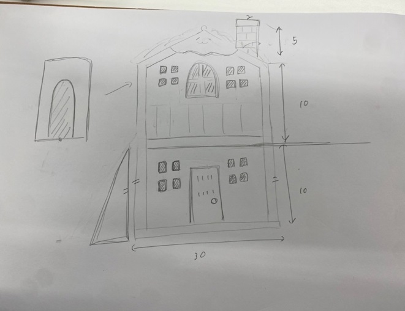
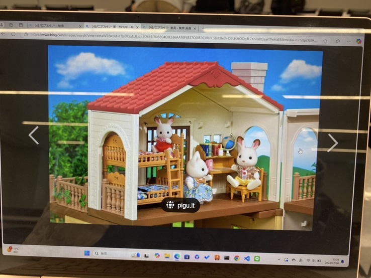
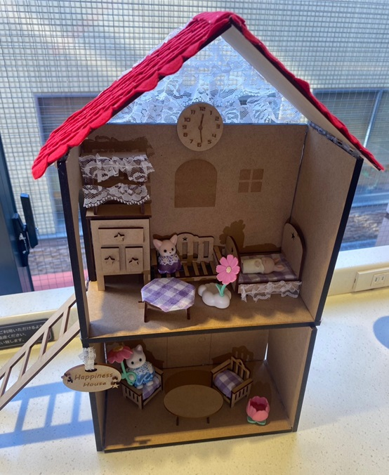

🐰シルバニアのお家🏠
今回の最終課題は、「Haruna」と「みり」と協力して作り上げた。可愛いものを作りたいという話になり、シルバニアのお家を作ることにした。
構想段階スケッチ・イメージ
 
長さは、作っていくうちにどんどん変えていった。
完成品の写真

MDFで家と、家具を作った。（机・イス・タンス・ソファー・ベット・時計・表札）💖
屋根には、フェルトを切って貼り付け、レンガ風にしたり、レースをタンスに付けたりして可愛くデコレーションした。
紹介動画
💕おわり💕